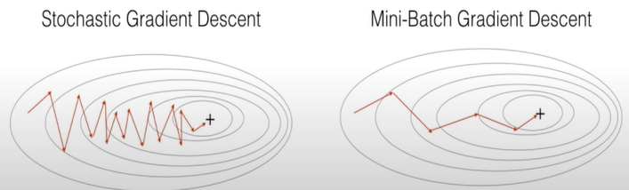

딥러닝 인터뷰
Diff between AI, ML and Deep Learning
- AI: technique which enables machines to mimic human behaviour.
- ML: using statical methods to enable machines to improve with experience
- Deep learning: Subset of ML, using multi layer neural network
Do you think deep learning is better than machine learning? if so, why?
- 머신 러닝은 데이터가 많아질수록 느려짐, 딥러닝은 그렇지 않음
- 머신 러닝은 feature를 직접 지정해줘야 함. 딥러닝은 알아서 학습
What is Perceptron? And how does it work?
What is the role of weights and bias?
What is the activation function?
Steps of perceptron
- Init the weights and threshold
- Provide the input and calculate the output
- Update the weights
- Repeat Steps 2 and 3
What is cost/loss function
- A cost function is a measure of the accuracy of the neural network with respoect to a given training sample and expected output
- it provides the perfomance of a neural network.
- in deep learning, the goal is to minimize the cost function.
- use gradient descent
Gradient descent
- optimization algorithm used to minimize some function by iteratively moving in the direction of steepest descent.
Mini-batch gradient

- more efficient compared to stochastic gradient descent
- generalization by finding the flat minima
- mini-batches allows help to approximate the gradient of the entire training set which helps us to avoid local minima
What are the steps for using a gradient descent algorithm
- init random weight and bias
- pass an input thru the network and get values from the output layer
- calculate the error between the actual value and the predicted value
- go to each neuron which contributes to the error and then change its respective values to reduce the error
- reiterate until you find the best weights of the network
What are the shortcomings of a single layer perceptron?
- Single layer perceptron only can classify linearly saparable data points.
- Complex problems requiring lots of parameters cannot be solved.
What is Multi Layer Perceptron?

- MLP is a deep artificial neural network composed by multiple perceptron
- Input Layer + Hidden Layer + Output Layer
- 입력값을 받음 + 실제 계산 레이어 + 결정/추론 아웃풋
What are the different parts of a multi layer perceptron?
- Input Nodes
- 입력값을 Hidden Nodes에 패스
- Hidden Nodes
- 실제 계산 수행
- Transfer information from input to output
- Output Nodes
- 값 출력 및 추론 담당
What is Data Normalization and Why do we need it?
-
Rescale values to fit in a specific range
- To assure better convergence during backpropagation
-
신경망의 학습을 빠르게 하기 위해
- 각각 Unnormalized, Normalized 데이터들의 비용 함수

- Normalized의 경우 어디서 시작하던 쉽게 최적값에 도달 가능
Backpropagation
- Calculate the error and propagate it back to the earlier layers.
Hyper Parameter
- 모델링 시 사용자가 직접 세팅해주는 값 (즉 일반적으로 말하는 파라미터)
- Hidden Layers, Test Results, Learning rate, KNN에서의 K값 등…
Dropout

- Regularization technique to avoid overfitting by model complexity